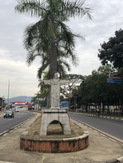
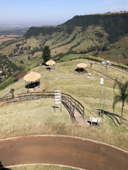

São Pedro - SP
Três irmãos da família Teixeira de Barros - Joaquim, José e Luiz - adquiriram a Sesmaria do Pinheiros (lote de terra distribuído a um beneficiário em nome do Rei de Portugal com objetivo de cultivo e colonização), onde hoje se situa a cidade de São Pedro.
Inicialmente chamada de Capela do Picadão devido a uma trilha com o mesmo nome, tinha como padroeiro São Sebastião.
Logo os moradores, que não gostaram muito do nome da cidade, trocaram o padroeiro e assim também a cidade passou a se chamar São Pedro.
A cidade comemora seu aniversário de fundação em 22/02. Possui uma área de 609.091 km² com elevação de 561 m. População: 35.980 (2020)
Em São Pedro, nossa viagem foi de Kombi e aproveitamos para conhecer a cidade.
A cidade é deliciosamente agradável e tem muitas opções de lazer onde a maioria delas aceitam Pets. Escolhemos algumas delas.
 Portico São Pedro
Portico São Pedro- Entrada São Pedro
 Escadaria do Cristo
Escadaria do Cristo Bar na estrada do Cristo
Bar na estrada do Cristo- Vista Cristo
 Igreja Matriz
Igreja Matriz- Praça da Igreja
 Camping
Camping Escadaria Camping
Escadaria Camping Escadaria Camping
Escadaria Camping Trilha
Trilha Tirolesa
Tirolesa